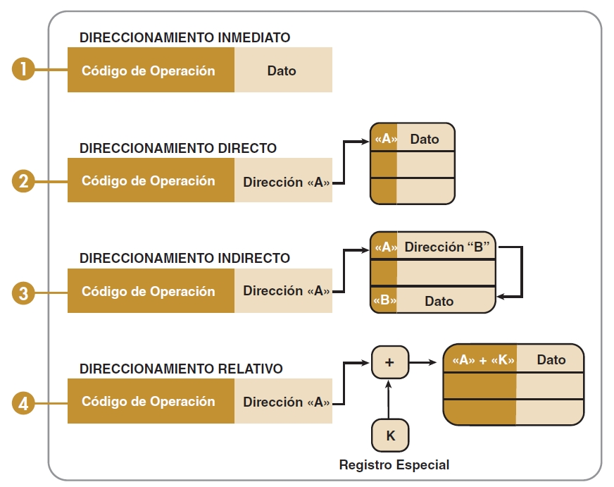

2.3.4 Métodos de direccionamiento
Son las diferentes maneras de especificar un operando dentro de una instrucción. Un modo de direccionamiento especifica la forma de calcular la dirección de memoria efectiva de un operando mediante el uso de la información contenida en registros dentro de una instrucción de la máquina.
Direccionamiento implícito
Depende solamente de la instrucción, es decir, la instrucción no lleva parámetros. Particularmente en instrucciones que no accesan memoria, o bien que tienen una forma específica de accesarla.
Ejemplos: PUSHF, POPF, NOP
Modo registro
Usa solamente registros como operandos. Es el más rápido, pues minimiza los recursos necesarios (toda la información fluye dentro del EU del CPU)
Ejemplo: MOV AX, BX
Modo inmediato
Tiene dos operandos: un registro y una constante que se usa por su valor. El valor constante no se tiene que buscar en memoria, pues ya se obtuvo al hacer el “fetch” de la instrucción.
Ejemplo: MOV AH, 9
Modo directo
Uno de los operandos involucra una localidad específica de memoria El valor constante se tiene que buscar en memoria, en la localidad especificada. Es más lento que los anteriores, pero es el más rápido para ir a memoria, pues ya “sabe” la localidad, la toma de la instrucción y no la tiene que calcular.
Ejemplo: MOV AH, [0000] MOV AH, Variableft
Estas dos instrucciones serían equivalentes, si Variable está, por ejemplo, en la localidad 0 de memoria. En la forma primitiva del lenguaje de máquina, como el primer ejemplo, se tiene que indicar “mover a AH el contenido (indicado por los corchetes), de la localidad 0 de los datos (lo de los datos es implícito). El lenguaje Ensamblador, sin embargo, nos permite la abstracción del uso de variables, pero como una variable tiene una localidad determinada en memoria, para el procesador funciona igual. La única diferencia consiste en que el programador no tiene que preocuparse por la dirección, ese manejo lo hace automáticamente el Ensamblador.
Modo indirecto
Se usan los registros SI, DI como apuntadores.
